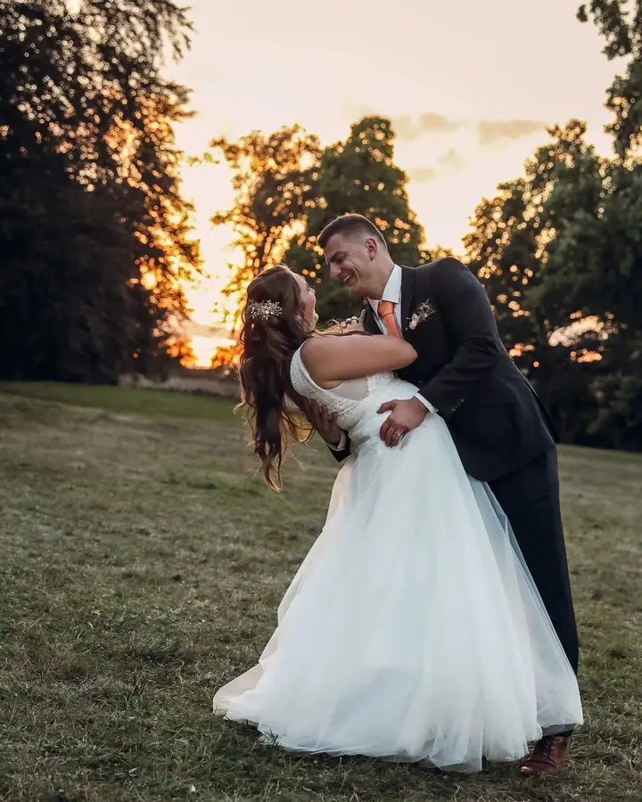
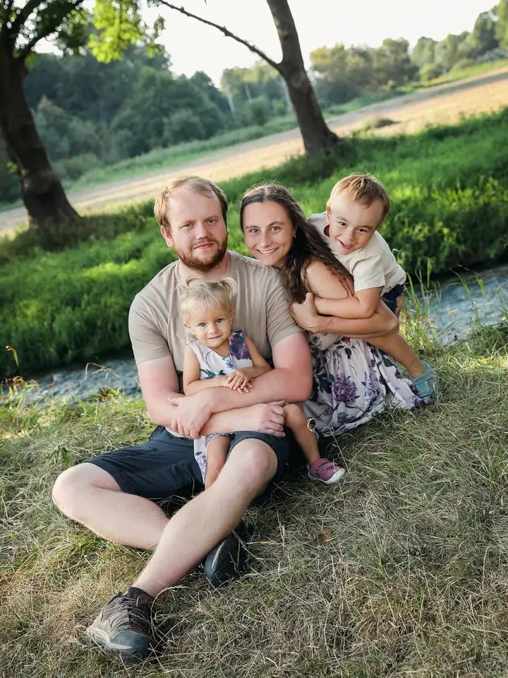
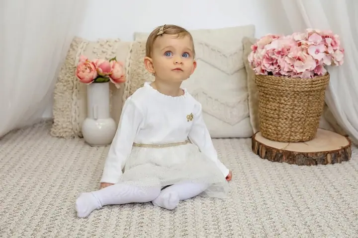

Svatební focení
Můžu fotit jen obřad a portréty novomanželů, nebo s vámi strávit celý den od ranních příprav po začátek svatební párty. Fotky dostanete nalepené ve svatebním albu a k tomu všechny snímky na DVD.

Jmenuji se Anna a v Boskovicích mám Fotoateliér Anna. Fotím svatby od obřadu až po první tanec, těhotenské focení, miminka, děti a celé rodiny. Když potřebujete fotku na…
Rezervovat termínMůj fotoateliér najdete v Boskovicích. Fotím tu malé i velké. Miminka, děti k prvním narozeninám, maminky v očekávání, portréty i celé rodiny. V ateliéru mám jemné kulisy se suchou trávou, květinami a medvídkem, se kterým se děti rychle skamarádí.


Nejvíc se těším na svatby. Než si termín zarezervujete, ráda si poslechnu, jak si svůj den představujete, co je pro vás důležité a v jakém stylu bude vaše svatba. Místo pro focení novomanželů si můžete vybrat sami, nebo vám podle lokace s výběrem pomůžu.
K focení patří i všechno okolo. Tisknu fotografie z flash disků a paměťových karet, dělám velkoformátový tisk a tisk na plátno a převádím staré diapozitivy a kinofilmy do digitální podoby. U mě si můžete vybrat i fotoalbum nebo rámeček.
Co fotím
Můžu fotit jen obřad a portréty novomanželů, nebo s vámi strávit celý den od ranních příprav po začátek svatební párty. Fotky dostanete nalepené ve svatebním albu a k tomu všechny snímky na DVD.
Děti fotím v ateliéru mezi květinami a plyšáky, třeba k prvním narozeninám. Rodiny ráda fotím venku v trávě a u vody.
Fotím maminky v očekávání i úplně malá miminka. Je to jemné a klidné focení, kterému necháme tolik času, kolik bude potřeba.
Fotky na doklady vám udělám hned, nebo do druhého dne. Tisknu fotografie i velké formáty na plátno a staré diapozitivy a kinofilmy převedu do digitální podoby.
Postup
Napíšete mi a já si poslechnu, jakou máte představu a co je pro vás důležité. Termín je závazný po zaplacení zálohy 2 000 Kč, kterou pak odečtu od celkové ceny.
Vyberete si od samotného obřadu s portréty až po celodenní focení, nebo vám sestavím nabídku na míru. Místo pro focení novomanželů si zvolíte sami, nebo ho najdeme spolu.
Fotím obřad, skupinové fotky s rodinou a hosty a podle balíčku také přípravy, zvyky, hostinu, krájení dortu a první tanec.
Asi za 7 až 9 týdnů od svatby dostanete svatební album s upravenými fotkami a k tomu DVD se všemi nafocenými snímky.
Otázky
Obřad s portréty a malým albem začíná na 6 500 Kč, celodenní focení na 16 000 Kč. Když vám žádný balíček nesedí, sestavím vám individuální nabídku.
Zakázku zpracovávám zhruba 7 až 9 týdnů od svatby.
Záleží na balíčku, velikosti svatby, počtu hostů a překvapivě i na počasí. Orientačně je to od 50 upravených fotek u obřadu až po zhruba 200 u celodenního focení.
Ano, fotky na doklady dělám v ateliéru v Boskovicích expres, nebo do druhého dne.